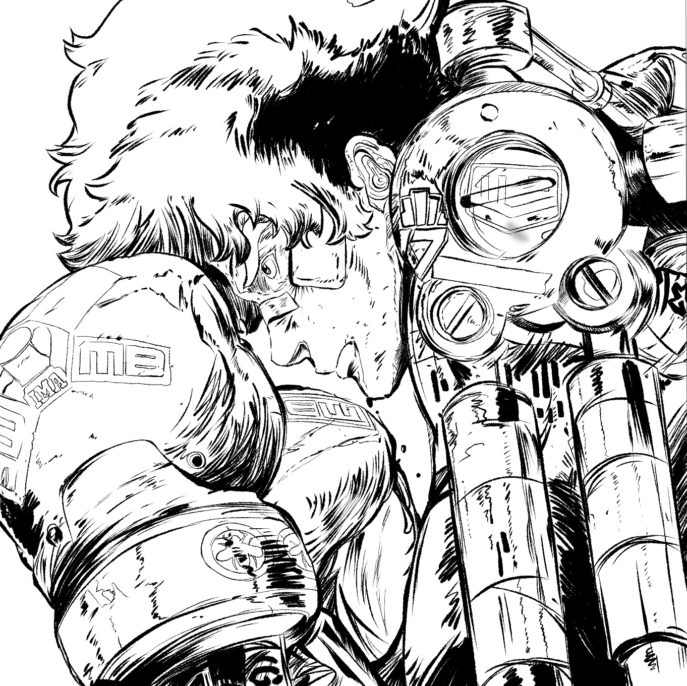

<body>
{%- if site.author.type == 'organization' -%}
  {%- assign _author_itemtype = 'http://schema.org/Organization' -%}
{%- else -%}
  {%- assign _author_itemtype = 'http://schema.org/Person' -%}
{%- endif -%}

  <div style="display: block; margin: 0 auto; width: 50%;">
<div itemscope itemtype="{{ _author_itemtype }}" class="layout--author">
  <div class="main">
    <div class="content">
      <div style="width:100px; height:100px; border-radius:100%; overflow:hidden; float:center">
        
        </div>
      <h1 class="title-text">{{ site.author.name }}</h1>
      {% include author-links.html author=site.author %}
      <p><a class="social-link blog" title="Visit my blog." href="/LiJT-Daily/navigate-page/blog" target="_self">Visit My Blog</a></p>
    </div>
  </div>
</div>
</div>
</body>
<script>{%- include scripts/common.js -%}</script>
{% include analytics.html %}